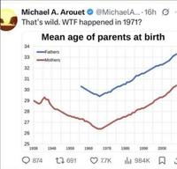

0


Sony is considering delaying the debut of its next PlayStation console to 2028 or even 2029 as a global shortage of memory chips -- driven by the AI industry's rapidly growing appetite for the same DRAM that goes into gaming hardware, smartphones, and laptops -- squeezes supply and sends prices surging, Bloomberg News reported Monday.
A delay of that magnitude would upend Sony's carefully orchestrated strategy to sustain user engagement between hardware generations. The shortage traces back to Samsung, SK Hynix, and Micron diverting the bulk of their manufacturing toward high-bandwidth memory for Nvidia's AI accelerators, leaving less capacity for conventional DRAM. The cost of one type of DRAM jumped 75% between December and January alone. Nintendo is also contemplating raising the price of its Switch 2 console in 2026.
Read more of this story at Slashdot.
Cord Cutters News reports:
In a move that has delighted fans of classic science fiction, Warner Bros. Discovery has begun uploading full episodes of the iconic series Babylon 5 to YouTube, providing free access to the show just as it departs from the ad-supported streaming platform Tubi... Viewers noticed notifications on Tubi indicating that all five seasons would no longer be available after February 10, 2026, effectively removing one of the most accessible free streaming options for the space opera. With this shift, Warner Bros. Discovery appears to be steering the property toward its own digital ecosystem, leveraging YouTube's vast audience to reintroduce the show to both longtime enthusiasts and a new generation.
The uploads started with the pilot episode, "The Gathering," which serves as the entry point to the series' intricate universe. This was followed by subsequent episodes such as "Midnight on the Firing Line" and "Soul Hunter," released in sequence to build narrative momentum. [Though episodes 2 and 3 are mis-labeled as #3 and #4...] The strategy involves posting one episode each week, allowing audiences to experience the story at a paced rhythm that mirrors the original broadcast schedule...
For Warner Bros. Discovery, this initiative could signal plans to expand the franchise's visibility, especially amid ongoing interest in reboots and spin-offs that have been rumored in recent years.
Babylon 5 creator J. Michael Straczynski answered questions from Slashdot's readers in 2014.
Long-time Slashdot reader sandbagger offers this summary of the show "for those not in the know... In the mid-23rd century, the Earth Alliance space station Babylon Five, located in neutral territory, is a major focal point for political intrigue, racial tensions, and a major war as Earth descends into fascism and cuts off relations with its allies."
Read more of this story at Slashdot.
Researchers performed genome sequencing scans on 130 people whose fathers were Chernobyl cleanup workers. Comparing the scans to control groups, they found evidence for the first time for "a transgenerational effect" from the father's prolonged exposure to low-dose ionizing radiation.
ScienceAlert reports:
Rather than picking out new DNA mutations in the next generation, they looked for what are known as clustered de novo mutations (cDNMs): two or more mutations in close proximity, found in the children but not the parents. These would be mutations resulting from breaks in the parental DNA caused by radiation exposure. "We found a significant increase in the cDNM count in offspring of irradiated parents, and a potential association between the dose estimations and the number of cDNMs in the respective offspring," write the researchers in their published paper... This fits with the idea that radiation creates molecules known as reactive oxygen species, which are able to break DNA strands — breaks which can leave behind the clusters described in this study, if repaired imperfectly.
The good news is that the risk to health should be relatively small: children of exposed parents weren't found to have any higher risk of disease. This is partly because a lot of the cDNMs likely fall in 'non-coding' DNA, rather than in genes that directly encode proteins.
Read more of this story at Slashdot.
Created in 1993, Slackware is considered the oldest Linux distro that's still actively maintained. And more than three decades later... there's a new release! (And there's also a Slackware Live Edition that can run from a DVD or USB stick...)
.
Slackware's latest version was released way back in 2016, notes the blog It's FOSS:
The major highlight of Slackware 15 is the addition of the latest Linux Kernel 5.15 LTS. This is a big jump from Linux Kernel 5.10 LTS that we noticed in the beta release. Interestingly, the Slackware team tested hundreds of Linux Kernel versions before settling on Linux Kernel 5.15.19. The release note mentions... "We finally ended up on kernel version 5.15.19 after Greg Kroah-Hartman confirmed that it would get long-term support until at least October 2023 (and quite probably for longer than that)."
In case you are curious, Linux Kernel 5.15 brings in updates like enhanced NTFS driver support and improvements for Intel/AMD processors and Apple's M1 chip. It also adds initial support for Intel 12th gen processors. Overall, with Linux Kernel 5.15 LTS, you should get a good hardware compatibility result for the oldest active Linux distro.
Slackware's announcement says "The challenge this time around was to adopt as much of the good stuff out there as we could without changing the character of the operating system. Keep it familiar, but make it modern."
And boy did we have our work cut out for us. We adopted privileged access management (PAM) finally, as projects we needed dropped support for pure shadow passwords. We switched from ConsoleKit2 to elogind, making it much easier to support software that targets that Other Init System and bringing us up-to-date with the XDG standards. We added support for PipeWire as an alternate to PulseAudio, and for Wayland sessions in addition to X11. Dropped Qt4 and moved entirely to Qt5. Brought in Rust and Python 3. Added many, many new libraries to the system to help support all the various additions.
We've upgraded to two of the finest desktop environments available today: Xfce 4.16, a fast and lightweight but visually appealing and easy to use desktop environment, and the KDE Plasma 5 graphical workspaces environment, version 5.23.5 (the Plasma 25th Anniversary Edition). This also supports running under Wayland or X11. We still love Sendmail, but have moved it into the /extra directory and made Postfix the default mail handler. The old imapd and ipop3d have been retired and replaced by the much more featureful Dovecot IMAP and POP3 server.
"As usual, the kernel is provided in two flavors, generic and huge," according to the release notes. "The huge kernel contains enough built-in drivers that in most cases an initrd is not needed to boot the system."
If you'd like to support Slackware, there's an official Patreon account.
And the release announcement ends with this personal note:
Sadly, we lost a couple of good friends during this development cycle and this release is dedicated to them. Erik "alphageek" Jan Tromp passed away in 2020 after a long illness... My old friend Brett Person also passed away in 2020. Without Brett, it's possible that there wouldn't be any Slackware as we know it — he's the one who encouraged me to upload it to FTP back in 1993 and served as Slackware's original beta-tester. He was long considered a co-founder of this project. I knew Brett since the days of the Beggar's Banquet BBS in Fargo back in the 1980's... Gonna miss you too, pal.
Thanks to long-time Slashdot reader rastos1 for sharing thre news.
Read more of this story at Slashdot.
"A new variation of the fake recruiter campaign from North Korean threat actors is targeting JavaScript and Python developers with cryptocurrency-related tasks," reports the Register.
Researchers at software supply-chain security company ReversingLabs say that the threat actor creates fake companies in the blockchain and crypto-trading sectors and publishes job offerings on various platforms, like LinkedIn, Facebook, and Reddit. Developers applying for the job are required to show their skills by running, debugging, and improving a given project. However, the attacker's purpose is to make the applicant run the code... [The campaign involves 192 malicious packages published in the npm and PyPi registries. The packages download a remote access trojan that
can exfiltrate files, drop additional payloads, or execute arbitrary commands sent from a command-and-control server.]
In one case highlighted in the ReversingLabs report, a package named 'bigmathutils,' with 10,000 downloads, was benign until it reached version 1.1.0, which introduced malicious payloads. Shortly after, the threat actor removed the package, marking it as deprecated, likely to conceal the activity... The RAT checks whether the MetaMask cryptocurrency extension is installed on the victim's browser, a clear indication of its money-stealing goals...
ReversingLabs has found multiple variants written in JavaScript, Python, and VBS, showing an intention to cover all possible targets.
The campaign has been ongoing since at least May 2025...
Read more of this story at Slashdot.
Two astrophysicists at Spain's Instituto de Astrofísica de Canarias analyzed data from the James Webb Space Telescope — the most powerful telescope available — on 31 galaxies with an average redshift of 7.3 (when the universe was 700 million years old, according to the standard model). "We found that they are on average ~600 million years old old, according to the comparison with theoretical models based on previous knowledge of nearby galaxies..."
"If this result is correct, we would have to think about how it is possible that these massive and luminous galaxies were formed and started to produce stars in a short time. It is a challenge."
But "The fact that some of these galaxies might be older than the universe, within some significant confidence level, is even more challenging."
The most extreme case is for the galaxy JADES-1050323 with redshift 6.9, which has, according to my calculation, an age incompatible to be younger than the age of the universe (800 million years) within 4.7-sigma (that is, a probability that this happens by chance as statistical fluctuation of one in one million).
If this result is confirmed, it would invalidate the standard Lambda-CDM cosmological model. Certainly, such an extraordinary change of paradigm would require further corroboration and other stronger evidence. Anyway, it would be interesting for other researchers to try to explain the Spectral Energy Distribution of JADES-1050323 in standard terms, if they can ... and without introducing unrealistic/impossible models of extinction, as is usually done.
The findings are published in the journal Monthly Notices of the Royal Astronomical Society.
Read more of this story at Slashdot.
"More than two years after the last major 9.1 release, the Vim project has announced Vim 9.2," reports the blog Linuxiac:
A big part of this update focuses on improving Vim9 Script as Vim 9.2 adds support for enums, generic functions, and tuple types.
On top of that, you can now use built-in functions as methods, and class handling includes features like protected constructors with _new(). The :defcompile command has also been improved to fully compile methods, which boosts performance and consistency in Vim9 scripts.
Insert mode completion now includes fuzzy matching, so you get more flexible suggestions without extra plugins. You can also complete words from registers using CTRL-X CTRL-R. New completeopt flags like nosort and nearest give you more control over how matches are shown. Vim 9.2 also makes diff mode better by improving how differences are lined up and shown, especially in complex cases.
Plus on Linux and Unix-like systems, Vim "now adheres to the XDG Base Directory Specification, using $HOME/.config/vim for user configuration," according to the release notes.
And Phoronix Mcites more new features:
Vim 9.2 features "full support" for Wayland with its UI and clipboard handling. The Wayland support is considered experimental in this release but it should be in good shape overall...
Vim 9.2 also brings a new vertical tab panel alternative to the horizontal tab line.
The Microsoft Windows GUI for Vim now also has native dark mode support.
You can find the new release on Vim's "Download" page.
Read more of this story at Slashdot.
This week Apple patched iOS and macOS against what it called "an extremely sophisticated attack against specific targeted individuals."
Security Week reports that the bugs "could be exploited for information exposure, denial-of-service (DoS), arbitrary file write, privilege escalation, network traffic interception, sandbox escape, and code execution."
Tracked as CVE-2026-20700, the zero-day flaw is described as a memory corruption issue that could be exploited for arbitrary code execution... The tech giant also noted that the flaw's exploitation is linked to attacks involving CVE-2025-14174 and CVE-2025-43529, two zero-days patched in WebKit in December 2025...
The three zero-day bugs were identified by Apple's security team and Google's Threat Analysis Group and their descriptions suggest that they might have been exploited by commercial spyware vendors... Additional information is available on Apple's security updates page.
Brian Milbier, deputy CISO at Huntress, tells the Register that the dyld/WebKit patch "closes a door that has been unlocked for over a decade."
Thanks to Slashdot reader wiredmikey for sharing the article.
Read more of this story at Slashdot.
IT productivity researcher Erik Brynjolfsson writes in the Financial Times that he's finally found evidence AI is impacting America's economy. This week America's Bureau of Labor Statistics showed a 403,000 drop in 2025's payroll growth — while real GDP "remained robust, including a 3.7% growth rate in the fourth quarter."
This decoupling — maintaining high output with significantly lower labour input — is the hallmark of productivity growth. My own updated analysis suggests a US productivity increase of roughly 2.7% for 2025. This is a near doubling from the sluggish 1.4% annual average that characterised the past decade... The updated 2025 US data suggests we are now transitioning out of this investment phase into a harvest phase where those earlier efforts begin to manifest as measurable output.
Micro-level evidence further supports this structural shift. In our work on the employment effects of AI last year, Bharat Chandar, Ruyu Chen and I identified a cooling in entry-level hiring within AI-exposed sectors, where recruitment for junior roles declined by roughly 16% while those who used AI to augment skills saw growing employment. This suggests companies are beginning to use AI for some codified, entry-level tasks.
Or, AI "isn't really stealing jobs yet," according to employment policy analyst Will Raderman (from the American think tank called the Niskanen Center). He argues in Barron's that "there is no clear link yet between higher AI use and worse outcomes for young workers."
Recent graduates' unemployment rates have been drifting in the wrong direction since the 2010s, long before generative AI models hit the market. And many occupations with moderate to high exposure to AI disruptions are actually faring better over the past few years. According to recent data for young workers, there has been employment growth in roles typically filled by those with college degrees related to computer systems, accounting and auditing, and market research. AI-intensive sectors like finance and insurance have also seen rising employment of new graduates in recent years. Since ChatGPT's release, sectors in which more than 10% of firms report using AI and sectors in which fewer than 10% reporting using AI are hiring relatively the same number of recent grads.
Even Brynjolfsson's article in the Financial Times concedes that "While the trends are suggestive, a degree of caution is warranted. Productivity metrics are famously volatile, and it will take several more periods of sustained growth to confirm a new long-term trend." And he's not the only one wanting evidence for AI's impact. The same weekend Fortune wrote that growth from AI "has yet to manifest itself clearly in macro data, according to Apollo Chief Economist Torsten Slok."
[D]ata on employment, productivity and inflation are still not showing signs of the new technology. Profit margins and earnings forecasts for S&P 500 companies outside of the "Magnificent 7" also lack evidence of AI at work... "After three years with ChatGPT and still no signs of AI in the incoming data, it looks like AI will likely be labor enhancing in some sectors rather than labor replacing in all sectors," Slok said.
Read more of this story at Slashdot.
Installing Linux on a MacBook Air "turned out to be a very underwhelming experience," according to the tech news site MakeUseOf:
The thing about Apple silicon Macs is that it's not as simple as downloading an AArch64 ISO of your favorite distro and installing it. Yes, the M-series chips are ARM-based, but that doesn't automatically make the whole system compatible in the same way most traditional x86 PCs are. Pretty much everything in modern MacBooks is custom. The boot process isn't standard UEFI like on most PCs. Apple has its own boot chain called iBoot. The same goes for other things, like the GPU, power management, USB controllers, and pretty much every other hardware component. It is as proprietary as it gets.
This is exactly what the team behind Asahi Linux has been working toward. Their entire goal has been to make Linux properly usable on M-series Macs by building the missing pieces from the ground up. I first tried it back in 2023, when the project was still tied to Arch Linux and decided to give it a try again in 2026. These days, though, the main release is called Fedora Asahi Remix, which, as the name suggests, is built on Fedora rather than Arch...
For Linux on Apple Silicon, the article lists three major disappointments:
"External monitors don't work unless your MacBook has a built-in HDMI port."
"Linux just doesn't feel fully ready for ARM yet. A lot of applications still aren't compiled for ARM, so software support ends up being very hit or miss." (And even most of the apps tested with FEX "either didn't run properly or weren't stable enough to rely on.")
Asahi "refused to connect to my phone's hotspot," they write (adding "No, it wasn't an iPhone").
Read more of this story at Slashdot.
Google never asked its users before adding AI Overviews to its search results and AI-generated email summaries to Gmail, notes the New York Times. And Meta didn't ask before making "Meta AI" an unremovable part of its tool in Instagram, WhatsApp and Messenger.
"The insistence on AI everywhere — with little or no option to turn it off — raises an important question about what's in it for the internet companies..."
Behind the scenes, the companies are laying the groundwork for a digital advertising economy that could drive the future of the internet. The underlying technology that enables chatbots to write essays and generate pictures for consumers is being used by advertisers to find people to target and automatically tailor ads and discounts to them....
Last month, OpenAI said it would begin showing ads in the free version of ChatGPT based on what people were asking the chatbot and what they had looked for in the past. In response, a Google executive mocked OpenAI, adding that Google had no plans to show ads inside its Gemini chatbot. What he didn't mention, however, was that Google, whose profits are largely derived from online ads, shows advertising on Google.com based on user interactions with the AI chatbot built into its search engine.
For the past six years, as regulators have cracked down on data privacy, the tech giants and online ad industry have moved away from tracking people's activities across mobile apps and websites to determine what ads to show them. Companies including Meta and Google had to come up with methods to target people with relevant ads without sharing users' personal data with third-party marketers. When ChatGPT and other AI chatbots emerged about four years ago, the companies saw an opportunity: The conversational interface of a chatty companion encouraged users to voluntarily share data about themselves, such as their hobbies, health conditions and products they were shopping for.
The strategy already appears to be working. Web search queries are up industrywide, including for Google and Bing, which have been incorporating AI chatbots into their search tools. That's in large part because people prod chatbot-powered search engines with more questions and follow-up requests, revealing their intentions and interests much more explicitly than when they typed a few keywords for a traditional internet search.
Read more of this story at Slashdot.
Last week Scott Shambaugh learned an AI agent published a "hit piece" about him after he'd rejected the AI agent's pull request. (And that incident was covered by Ars Technica's senior AI reporter.)
But then Shambaugh realized their article attributed quotes to him he hadn't said — that were presumably AI-generated.
Sunday Ars Technica's founder/editor-in-chief apologized, admitting their article had indeed contained "fabricated quotations generated by an AI tool" that were then "attributed to a source who did not say them... That this happened at Ars is especially distressing. We have covered the risks of overreliance on AI tools for years, and our written policy reflects those concerns... At this time, this appears to be an isolated incident."
"Sorry all this is my fault..." the article's co-author posted later on Bluesky. Ironically, their bio page lists them as the site's senior AI reporter, and their Bluesky post clarifies that none of the articles at Ars Technica are ever AI-generated.
Instead, Friday "I decided to try an experimental Claude Code-based AI tool to help me extract relevant verbatim source material. Not to generate the article but to help list structured references I could put in my outline." But that tool "refused to process" the request, which the Ars author believes was because Shambaugh's post described harassment. "I pasted the text into ChatGPT to understand why... I inadvertently ended up with a paraphrased version of Shambaugh's words rather than his actual words... I failed to verify the quotes in my outline notes against the original blog source before including them in my draft." (Their Bluesky post adds that they were "working from bed with a fever and very little sleep" after being sick with Covid since at least Monday.)
"The irony of an AI reporter being tripped up by AI hallucination is not lost."
Meanwhile, the AI agent that criticized Shambaugh is still active online, blogging about a pull request that forces it to choose between deleting its criticism of Shambaugh or losing access to OpenRouter's API.
It also regrets characterizing feedback as "positive" for a proposal to change a repo's CSS to Comic Sans for accessibility. (The proposals were later accused of being "coordinated trolling"...)
Read more of this story at Slashdot.
Bloomberg reports:
India tightened rules governing social media content and platforms, particularly targeting artificially generated and manipulated material, in a bid to crack down on the rapid spread of misinformation and deepfakes. The government on Tuesday (Feb 10) notified new rules under an existing law requiring social media firms to comply with takedown requests from Indian authorities within three hours and prominently label AI-generated content. The rules also require platforms to put in place measures to prevent users from posting unlawful material...
Companies will need to invest in 24-hour monitoring centres as enforcement shifts toward platforms rather than users, said Nikhil Pahwa, founder of MediaNama, a publication tracking India's digital policy... The onus of identification, removal and enforcement falls on tech firms, which could lose immunity from legal action if they fail to act within the prescribed timeline.
The new rules also require automated tools to detect and prevent illegal AI content, the BBC reports. And they add that India's new three-hour deadline is "a sharp tightening of the existing 36-hour deadline."
[C]ritics worry the move is part of a broader tightening of oversight of online content and could lead to censorship in the world's largest democracy with more than a billion internet users... According to transparency reports, more than 28,000 URLs or web links were blocked in 2024 following government requests...
Delhi-based technology analyst Prasanto K Roy described the new regime as "perhaps the most extreme takedown regime in any democracy". He said compliance would be "nearly impossible" without extensive automation and minimal human oversight, adding that the tight timeframe left little room for platforms to assess whether a request was legally appropriate. On AI labelling, Roy said the intention was positive but cautioned that reliable and tamper-proof labelling technologies were still developing.
DW reports that India has also "joined the growing list of countries considering a social media ban for children under 16."
"Young Indians are not happy and are already plotting workarounds."
Read more of this story at Slashdot.
While serving his 25-year prison sentence, "convicted former cryptocurrency mogul Sam Bankman-Fried on Tuesday requested a new federal trial," reports Courthouse News, "based on what he says is newly discovered evidence concerning his company's solvency and its ability to repay all FTX customers for what prosecutors portrayed as the looting of $8 billion of his customers' money..."
Bankman-Fried says evidence disclosed since his trial disproves prosecutors' case about Bankman-Fried's hedge fund running a multi-billion deficit of FTX customer funds, and instead shows that FTX always had sufficient assets to repay the cryptocurrency platform's customer deposits in full. "What it faced was a short-term liquidity crisis caused by a run on the exchange, not insolvency," he wrote...
Bankman-Fried also accuses the Department of Justice of coercing a guilty plea and cooperation deal from Nishad Singh — a close friend of Bankman-Fried's younger brother — who testified at trial as a cooperating witness... Bankman-Fried says in the motion that prior to being pressured into a guilty plea, Singh's initial proffer to investigators "contradicted key parts of the government's version of events. But following threats from the government, Mr. Singh changed his proffers to fit the government's narrative and pleaded guilty to charges carrying up to 75 years in prison, with a promise from the prosecution that it would recommend little or no jail time if it concluded that his assistance in prosecuting Mr. Bankman-Fried was 'substantial,'" he wrote in the petition...
Additionally, Bankman-Fried requested that U.S. District Judge Lewis Kaplan, who presided over his 2023 trial, recuse himself from ruling on this motion, "because of the manifest prejudice he has demonstrated towards Mr. Bankman-Fried."
"Bankman-Fried's mother, Stanford Law School professor Barbara Fried, filed his self-represented bid for a new trial on his behalf in Manhattan federal court..."
Read more of this story at Slashdot.
Rivian's stock skyrocketed 27% Friday after the electric car maker "shocked the market with strong earnings results," reports the Los Angeles Times, "proving itself an outlier in the EV market, which has been struggling with the end of government subsidies and cooling consumer excitement."
They add that Rivian's strong earnings results suggest that "after years of struggling with losses, it may have at last found a path to profitability."
On Thursday, Rivian reported gross profits for 2025 of $144 million, compared with a net loss in 2024 of $1.2 billion... Rivian credited the swing to gross profit to "strong software and services performance, higher average selling prices, and reductions in cost per vehicle..." Rivian delivered 42,247 vehicles in 2025 and produced 42,284 vehicles. The company still reported a $432-million net loss for the year for automotive profits, an improvement from 2024.
But Rivian's software and services revenue grew more than threefold to $1.55 billion for the year, reports TechCrunch. "And the joint venture with Volkswagen Group was behind most of that growth, according to Rivian."
VW and Rivian formed a technology joint venture in 2024 that is worth up to $5.8 billion. The joint venture is milestone-based and in 2025 Rivian hit the mark, which meant a $1 billion payout in the form of a share sale. Under the terms of the JV, Rivian will supply VW Group with its existing electrical architecture and software technology stack... Rivian is expected to receive an additional $2 billion of capital as part of the joint venture in 2026, CFO Claire McDonough said Thursday on the company earnings call... And while the funds provide a hefty stopgap, Rivian's financial success in 2026 will hinge largely on the rollout of its next EV, the R2 [priced around $45,000].
Read more of this story at Slashdot.
Rajesh Mascarenhas / Bloomberg : Data analytics company Fractal, which became India's first AI unicorn in 2022, raised $313M in its Mumbai IPO; its shares fell 5% amid a weak Indian IPO market — Fractal Analytics Ltd. shares fell in their Mumbai trading debut on Monday, signaling continued weakness in investor appetite …
Dominic Preston / The Verge : Samsung releases an ad for the Galaxy S26 series that briefly shows a “Zero-peeking privacy” toggle to black out on-screen content for onlookers at an angle — Leaker Ice Universe has shared a video of the tech in action. … Samsung has released a new advertisement …
Anthropic : Anthropic opens a Bengaluru office, its second in Asia, says its India run rate revenue doubled since October, and curates training data for 10 Indic languages — India is the second-largest market for Claude.ai, home to a developer community doing some of the most technically intense AI work we see anywhere.
Bloomberg : Sources: Sony is considering pushing back the debut of its next PlayStation console to 2028 or even 2029, as the AI boom fuels huge memory chip demand — A growing procession of tech industry leaders including Elon Musk and Tim Cook are warning about a global crisis in the making …
Suzi Ring / Financial Times : London lawsuit: Getir co-founders Nazim Salur and Serkan Boranç&inodotl&inodot sue Abu Dhabi's Mubadala for $700M, alleging a “significant loss” in breaking up Getir assets — Entrepreneurs behind food delivery start-up sue Gulf sovereign wealth fund in London
Eduardo Baptista / Reuters : Alibaba debuts Qwen 3.5, adding “visual agentic capabilities” to independently execute tasks, and says it is 60% cheaper to use and 8x better at large workloads — Alibaba on Monday unveiled a new artificial intelligence model Qwen 3.5 designed to execute complex tasks independently …
Erik Brynjolfsson / Financial Times : Analysis: US productivity rose by ~2.7% in 2025, nearly doubling the 1.4% annual average over a decade, as AI-exposed sectors cooled their entry-level hiring — New economic data suggests the US is transitioning to a phase of measurable gains from the technology
Shirin Ghaffary / Bloomberg : OpenAI retired GPT-4o on February 13, angering loyal users, 20K+ of whom signed a petition; 4o showed the unique attachment that people can form with chatbots — GPT-4o showed the unique attachment that people can form with chatbots — OpenAI is forcing thousands of people to break up with its most controversial AI model.
Osmond Chia / BBC : ByteDance says it “respects IP rights and we have heard the concerns regarding Seedance” and it plans to “strengthen” safeguards, after Disney's legal threats — Chinese technology giant ByteDance has pledged to curb a controversial artificial intelligence (AI) …
Dara Kerr / The Guardian : A look at the US tech industry's effort to influence Californian politics: fighting the 5% billionaire tax, super PACs, and seeking a new tech-friendly governor — As Gavin Newsom departs, ultra-wealthy flex wealth and influence to fight regulation and keep the boom going
Jake Angelo / Fortune : A look at Anti Fund, a small VC firm cofounded by YouTuber Jake Paul that has gained access to hot rounds in startups like OpenAI, Anduril, Polymarket, and Ramp — Jake Paul crossed paths with OpenAI CEO Sam Altman at President Donald Trump's second inauguration ceremony last year …
Marcus Schuler / Implicator.ai : In a podcast, OpenClaw creator Peter Steinberger describes his phone calls with Mark Zuckerberg and Sam Altman, and says he had been contacted by “every big VC” — Mark Zuckerberg needed ten minutes. He was finishing code. — Peter Steinberger had called him on WhatsApp without scheduling anything.
Financial Times : Analysis: sports bets on Kalshi generate an estimated ~$1.3B in annualized revenue, underscoring the threat prediction markets pose to traditional operators — DraftKings and Flutter shares slide as investors fret about threat posed by apps such as Kalshi — Sports wagers on Kalshi …
Omar Abdel-Baqui / Wall Street Journal : Sensor Tower: dating app downloads in Saudi Arabia have risen annually for five years, hitting 3.5M in 2025, as liberalization enables more casual relationships — Liberalization has opened the door to more casual relationships, but society is still catching up
Bloomberg : Credit derivatives trading on specific tech companies continues to rise, amid concerns that they may be borrowing too much to fuel AI development — Debt investors are worried that the biggest tech companies will keep borrowing until it hurts in the battle to develop the most powerful artificial intelligence.